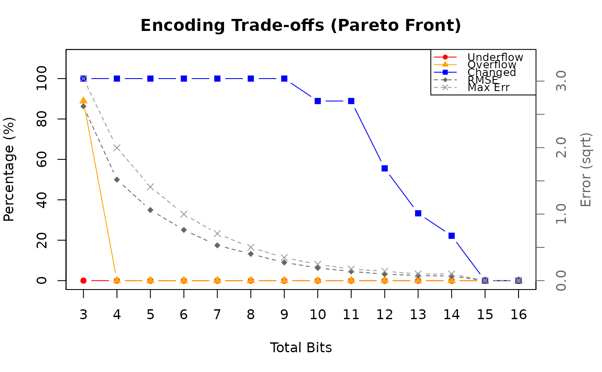

This function helps you choose appropriate bit allocations for encoding data. It auto-detects the data type and provides relevant analysis:
Numeric with decimals: trade-offs for floating point encoding, which exponent/significand combinations are adequate for your range and precision requirements.
Integer: (signed) integer encoding, how many bits are required.
Factor/character: category/enumeration encoding, which levels are in the data and how many bits are required
Logical: boolean encoding, do NA values require a second bit.
bf_analyze(
x,
range = NULL,
decimals = NULL,
min_bits = NULL,
max_bits = 16L,
fields = NULL,
plot = FALSE
)A numeric, integer, logical, factor, character vector, or single layer SpatRaster to analyze. The type is auto-detected.
numeric(2)
optional target range c(min,
max) to design for (float analysis only). Defaults to the actual data
range.
integer(1)
optional decimal places of
precision required (float analysis only).
integer(1)
minimum total bits to display in
the Pareto table output. Configurations with fewer bits are hidden. Default
is NULL (show all).
integer(1)
maximum total bits to consider.
Defaults to 16.
list
optional list specifying which configurations
to analyze (float analysis only). See Details.
logical(1)
whether to generate a plot (float
analysis only). Default is FALSE.
An object of class bf_analysis with analysis results.
All of this can be applied both to columns in a table or layers in a
SpatRaster. Use this before bf_map to understand your encoding
options.
For numeric (float) data, the output table shows Pareto-optimal exponent/significand configurations. The columns are:
Number of exponent bits, significand bits, and their sum. More exponent bits extend the representable range (at the cost of coarser resolution), while more significand bits improve resolution within each exponent band.
Percentage of data values that fall below the smallest representable positive value. These values are rounded to zero.
Percentage of data values that exceed the largest representable value. These values are clipped to the maximum.
Percentage of data values that change when encoded and decoded (i.e., that do not survive the round-trip exactly).
Smallest and largest step size between adjacent representable values. In minifloat encoding, resolution varies across the range: small values near zero have fine resolution (small steps), while large values have coarse resolution (large steps). A Max Res of 1.0 means that in the coarsest region, only integer values can be represented – continuous input will be rounded to whole numbers.
Root mean squared error between original and decoded values, computed over all non-NA data points.
Largest absolute difference between any original value and its decoded counterpart.
The table only shows Pareto-optimal configurations, i.e., those where no other configuration is strictly better on all quality metrics for the same or fewer total bits. To choose between them:
Check Underflow and Overflow first. Non-zero values
indicate data loss at the extremes of your range. Adding exponent bits
or using the range argument to widen the target range can help.
Compare RMSE and Max Err to your acceptable
precision. If you specified decimals, look for configurations
where Max Res is at most 10^(-decimals).
If Max Res is >= 1, decoded values in the upper range will appear as integers even if the input was continuous. This may or may not be acceptable depending on your application.
fieldsBy default, all combinations up to max_bits are evaluated and only
the Pareto front is shown. Use the fields argument to instead compare
specific configurations:
fields = list(exponent = 4) shows all significand values
paired with 4 exponent bits.
fields = list(exponent = c(3, 4), significand = c(5, 4))
compares exp=3/sig=5 and exp=4/sig=4.
# float analysis (numeric with decimals)
bf_analyze(bf_tbl$yield)
#> Float Analysis
#> ==============
#>
#> Observations 9
#> NA values 0
#> Range [4.43138, 13.2294]
#> Levels -
#> Sign required no
#> Bits required select from the table below
#> Suggested na.val automatic
#>
#> Exp Sig Total Underflow Overflow Changed Min Res Max Res RMSE Max Err
#> --- --- ----- --------- -------- ------- ---------- ---------- ---------- ----------
#> 2 1 3 0.0% 88.9% 100.0% 2.0000 2.0000 6.8694 9.2294
#> 3 1 4 0.0% 0.0% 100.0% 2.0000 4.0000 2.3050 3.9868
#> 3 2 5 0.0% 0.0% 100.0% 1.0000 2.0000 1.1267 1.9868
#> 3 3 6 0.0% 0.0% 100.0% 0.5000 1.0000 0.5805 0.9974
#> 3 4 7 0.0% 0.0% 100.0% 0.2500 0.5000 0.2801 0.4974
#> 3 5 8 0.0% 0.0% 100.0% 0.1250 0.2500 0.1610 0.2474
#> 3 6 9 0.0% 0.0% 100.0% 0.0625 0.1250 0.0743 0.1224
#> 3 7 10 0.0% 0.0% 100.0% 0.0312 0.0625 0.0364 0.0599
#> 3 8 11 0.0% 0.0% 100.0% 0.0156 0.0312 0.0176 0.0287
#> 3 9 12 0.0% 0.0% 100.0% 0.0078 0.0156 0.0079 0.0130
#> 3 10 13 0.0% 0.0% 100.0% 0.0039 0.0078 0.0033 0.0054
#> 3 11 14 0.0% 0.0% 100.0% 0.0020 0.0039 0.0022 0.0035
#> 3 12 15 0.0% 0.0% 100.0% 9.77e-04 0.0020 0.0010 0.0015
#> 3 13 16 0.0% 0.0% 100.0% 4.88e-04 9.77e-04 0.0005 0.0009
#>
#> Usage:
#> bf_map(protocol = "numeric", ...,
#> fields = list(exponent = <exp>, significand = <sig>))
# with specific decimal precision requirement
bf_analyze(bf_tbl$yield, decimals = 2)
#> Float Analysis
#> ==============
#>
#> Observations 9
#> NA values 0
#> Range [4.43138, 13.2294]
#> Levels -
#> Sign required no
#> Bits required select from the table below
#> Suggested na.val automatic
#> Decimals 2
#>
#> Exp Sig Total Underflow Overflow Changed Min Res Max Res RMSE Max Err
#> --- --- ----- --------- -------- ------- ---------- ---------- ---------- ----------
#> 2 1 3 0.0% 88.9% 100.0% 2.0000 2.0000 6.8703 9.2300
#> 3 1 4 0.0% 0.0% 100.0% 2.0000 4.0000 2.3057 3.9900
#> 3 2 5 0.0% 0.0% 100.0% 1.0000 2.0000 1.1277 1.9900
#> 3 3 6 0.0% 0.0% 100.0% 0.5000 1.0000 0.5816 1.0000
#> 3 4 7 0.0% 0.0% 100.0% 0.2500 0.5000 0.2813 0.5000
#> 3 5 8 0.0% 0.0% 100.0% 0.1250 0.2500 0.1615 0.2500
#> 3 6 9 0.0% 0.0% 100.0% 0.0625 0.1250 0.0745 0.1200
#> 3 7 10 0.0% 0.0% 88.9% 0.0312 0.0625 0.0365 0.0600
#> 3 8 11 0.0% 0.0% 88.9% 0.0156 0.0312 0.0191 0.0300
#> 3 9 12 0.0% 0.0% 55.6% 0.0078 0.0156 0.0094 0.0200
#> 3 10 13 0.0% 0.0% 33.3% 0.0039 0.0078 0.0058 0.0100
#> 3 11 14 0.0% 0.0% 22.2% 0.0020 0.0039 0.0047 0.0100
#> 3 12 15 0.0% 0.0% 0.0% 9.77e-04 0.0020 0.0000 0.0000
#> 3 13 16 0.0% 0.0% 0.0% 4.88e-04 9.77e-04 0.0000 0.0000
#> 4 12 16 0.0% 0.0% 0.0% 9.77e-04 0.0020 0.0000 0.0000
#>
#> Usage:
#> bf_map(protocol = "numeric", ...,
#> fields = list(exponent = <exp>, significand = <sig>))
# design for a larger range than current data
bf_analyze(bf_tbl$yield, range = c(0, 20))
#> Float Analysis
#> ==============
#>
#> Observations 9
#> NA values 0
#> Range [4.43138, 13.2294]
#> Levels -
#> Sign required no
#> Bits required select from the table below
#> Suggested na.val automatic
#> Target range [4.43138, 20]
#>
#> Exp Sig Total Underflow Overflow Changed Min Res Max Res RMSE Max Err
#> --- --- ----- --------- -------- ------- ---------- ---------- ---------- ----------
#> 2 1 3 0.0% 88.9% 100.0% 2.0000 2.0000 6.8694 9.2294
#> 3 1 4 0.0% 0.0% 100.0% 2.0000 8.0000 2.3050 3.9868
#> 3 2 5 0.0% 0.0% 100.0% 1.0000 4.0000 1.1267 1.9868
#> 3 3 6 0.0% 0.0% 100.0% 0.5000 2.0000 0.5805 0.9974
#> 3 4 7 0.0% 0.0% 100.0% 0.2500 1.0000 0.2801 0.4974
#> 3 5 8 0.0% 0.0% 100.0% 0.1250 0.5000 0.1610 0.2474
#> 3 6 9 0.0% 0.0% 100.0% 0.0625 0.2500 0.0743 0.1224
#> 3 7 10 0.0% 0.0% 100.0% 0.0312 0.1250 0.0364 0.0599
#> 3 8 11 0.0% 0.0% 100.0% 0.0156 0.0625 0.0176 0.0287
#> 3 9 12 0.0% 0.0% 100.0% 0.0078 0.0312 0.0079 0.0130
#> 3 10 13 0.0% 0.0% 100.0% 0.0039 0.0156 0.0033 0.0054
#> 3 11 14 0.0% 0.0% 100.0% 0.0020 0.0078 0.0022 0.0035
#> 3 12 15 0.0% 0.0% 100.0% 9.77e-04 0.0039 0.0010 0.0015
#> 3 13 16 0.0% 0.0% 100.0% 4.88e-04 0.0020 0.0005 0.0009
#>
#> Usage:
#> bf_map(protocol = "numeric", ...,
#> fields = list(exponent = <exp>, significand = <sig>))
# with visualization
bf_analyze(bf_tbl$yield, decimals = 2, plot = TRUE)

#> Float Analysis
#> ==============
#>
#> Observations 9
#> NA values 0
#> Range [4.43138, 13.2294]
#> Levels -
#> Sign required no
#> Bits required select from the table below
#> Suggested na.val automatic
#> Decimals 2
#>
#> Exp Sig Total Underflow Overflow Changed Min Res Max Res RMSE Max Err
#> --- --- ----- --------- -------- ------- ---------- ---------- ---------- ----------
#> 2 1 3 0.0% 88.9% 100.0% 2.0000 2.0000 6.8703 9.2300
#> 3 1 4 0.0% 0.0% 100.0% 2.0000 4.0000 2.3057 3.9900
#> 3 2 5 0.0% 0.0% 100.0% 1.0000 2.0000 1.1277 1.9900
#> 3 3 6 0.0% 0.0% 100.0% 0.5000 1.0000 0.5816 1.0000
#> 3 4 7 0.0% 0.0% 100.0% 0.2500 0.5000 0.2813 0.5000
#> 3 5 8 0.0% 0.0% 100.0% 0.1250 0.2500 0.1615 0.2500
#> 3 6 9 0.0% 0.0% 100.0% 0.0625 0.1250 0.0745 0.1200
#> 3 7 10 0.0% 0.0% 88.9% 0.0312 0.0625 0.0365 0.0600
#> 3 8 11 0.0% 0.0% 88.9% 0.0156 0.0312 0.0191 0.0300
#> 3 9 12 0.0% 0.0% 55.6% 0.0078 0.0156 0.0094 0.0200
#> 3 10 13 0.0% 0.0% 33.3% 0.0039 0.0078 0.0058 0.0100
#> 3 11 14 0.0% 0.0% 22.2% 0.0020 0.0039 0.0047 0.0100
#> 3 12 15 0.0% 0.0% 0.0% 9.77e-04 0.0020 0.0000 0.0000
#> 3 13 16 0.0% 0.0% 0.0% 4.88e-04 9.77e-04 0.0000 0.0000
#> 4 12 16 0.0% 0.0% 0.0% 9.77e-04 0.0020 0.0000 0.0000
#>
#> Usage:
#> bf_map(protocol = "numeric", ...,
#> fields = list(exponent = <exp>, significand = <sig>))
# compare specific configurations
bf_analyze(bf_tbl$yield, fields = list(exponent = c(2, 3, 4), significand = c(5, 4, 3)))
#> Float Analysis
#> ==============
#>
#> Observations 9
#> NA values 0
#> Range [4.43138, 13.2294]
#> Levels -
#> Sign required no
#> Bits required select from the table below
#> Suggested na.val automatic
#>
#> Exp Sig Total Underflow Overflow Changed Min Res Max Res RMSE Max Err
#> --- --- ----- --------- -------- ------- ---------- ---------- ---------- ----------
#> 2 5 7 0.0% 88.9% 100.0% 0.1250 0.1250 3.5022 5.4794
#> 3 4 7 0.0% 0.0% 100.0% 0.2500 0.5000 0.2801 0.4974
#> 4 3 7 0.0% 0.0% 100.0% 0.5000 1.0000 0.5805 0.9974
#>
#> Usage:
#> bf_map(protocol = "numeric", ...,
#> fields = list(exponent = <exp>, significand = <sig>))
# show all combinations for a specific exponent
bf_analyze(bf_tbl$yield, fields = list(exponent = 4))
#> Float Analysis
#> ==============
#>
#> Observations 9
#> NA values 0
#> Range [4.43138, 13.2294]
#> Levels -
#> Sign required no
#> Bits required select from the table below
#> Suggested na.val automatic
#>
#> Exp Sig Total Underflow Overflow Changed Min Res Max Res RMSE Max Err
#> --- --- ----- --------- -------- ------- ---------- ---------- ---------- ----------
#> 4 1 5 0.0% 0.0% 100.0% 2.0000 4.0000 2.3050 3.9868
#> 4 2 6 0.0% 0.0% 100.0% 1.0000 2.0000 1.1267 1.9868
#> 4 3 7 0.0% 0.0% 100.0% 0.5000 1.0000 0.5805 0.9974
#> 4 4 8 0.0% 0.0% 100.0% 0.2500 0.5000 0.2801 0.4974
#> 4 5 9 0.0% 0.0% 100.0% 0.1250 0.2500 0.1610 0.2474
#> 4 6 10 0.0% 0.0% 100.0% 0.0625 0.1250 0.0743 0.1224
#> 4 7 11 0.0% 0.0% 100.0% 0.0312 0.0625 0.0364 0.0599
#> 4 8 12 0.0% 0.0% 100.0% 0.0156 0.0312 0.0176 0.0287
#> 4 9 13 0.0% 0.0% 100.0% 0.0078 0.0156 0.0079 0.0130
#> 4 10 14 0.0% 0.0% 100.0% 0.0039 0.0078 0.0033 0.0054
#> 4 11 15 0.0% 0.0% 100.0% 0.0020 0.0039 0.0022 0.0035
#> 4 12 16 0.0% 0.0% 100.0% 9.77e-04 0.0020 0.0010 0.0015
#>
#> Usage:
#> bf_map(protocol = "numeric", ...,
#> fields = list(exponent = <exp>, significand = <sig>))
# integer analysis
bf_analyze(as.integer(c(0, 5, 10, 100)))
#> Integer Analysis
#> ================
#>
#> Observations 4
#> NA values 0
#> Range [0, 100]
#> Levels -
#> Sign required no
#> Bits required 7
#> Suggested na.val -
#>
#> Usage:
#> bf_map(protocol = "integer", ...)
# category/enum analysis
bf_analyze(bf_tbl$commodity)
#> Category/Enum Analysis
#> ======================
#>
#> Observations 9
#> NA values 1
#> Range -
#> Levels 3
#> Sign required -
#> Bits required 2
#> Suggested na.val 3
#>
#> ID Label Count
#> ---- -------------------- -----
#> 0 honey 1
#> 1 maize 3
#> 2 soybean 4
#>
#> Usage:
#> bf_map(protocol = "category", ..., na.val = 3)
# boolean analysis
bf_analyze(c(TRUE, FALSE, TRUE, NA))
#> Boolean Analysis
#> ================
#>
#> Observations 4
#> NA values 1
#> Range -
#> Levels -
#> Sign required -
#> Bits required 2
#> Suggested na.val 2
#>
#> TRUE 2
#> FALSE 1
#>
#> Usage:
#> bf_map(protocol = "na", ..., na.val = 2)
# raster with attribute table
library(terra)
#> terra 1.8.93
#>
#> Attaching package: ‘terra’
#> The following object is masked from ‘package:bitfield’:
#>
#> project
r <- rast(nrows = 3, ncols = 3, vals = c(0, 1, 2, 0, 1, 2, 0, 1, 2))
levels(r) <- data.frame(id = 0:2, label = c("low", "medium", "high"))
bf_analyze(r)
#> Category/Enum Analysis
#> ======================
#>
#> Observations 9
#> NA values 0
#> Range -
#> Levels 3
#> Sign required -
#> Bits required 2
#> Suggested na.val -
#>
#> ID Label Count
#> ---- -------------------- -----
#> 0 low 3
#> 1 medium 3
#> 2 high 3
#>
#> Usage:
#> bf_map(protocol = "category", ...)